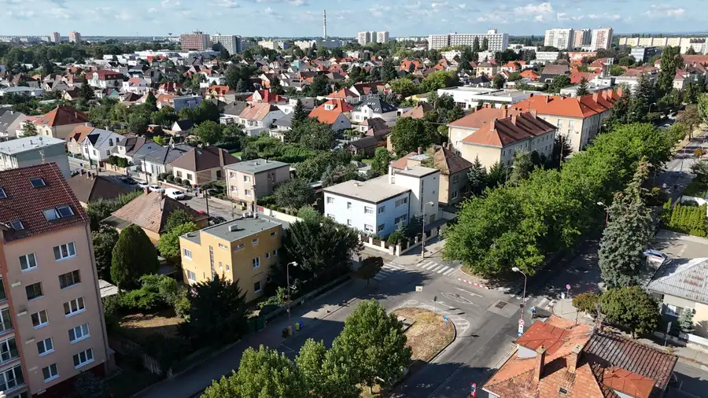
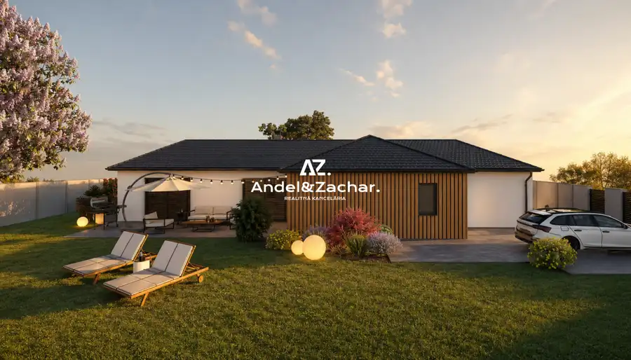
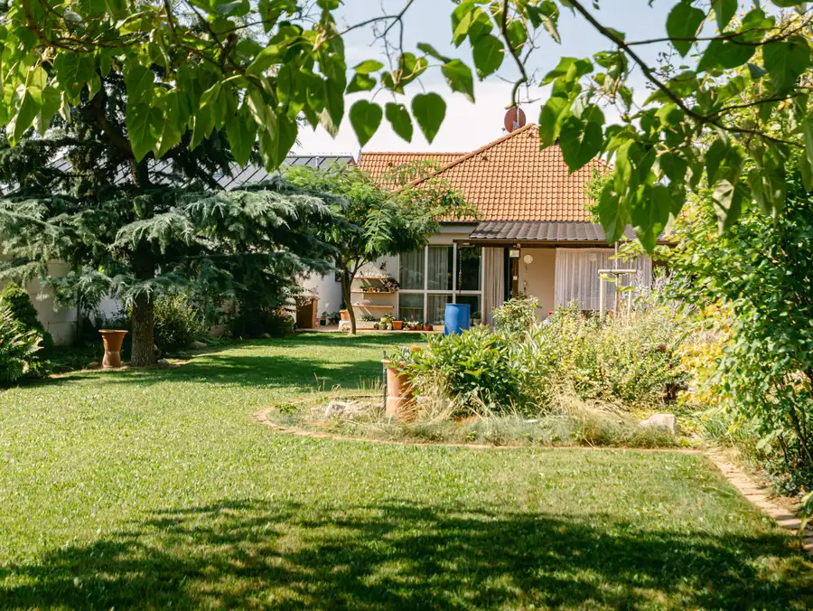
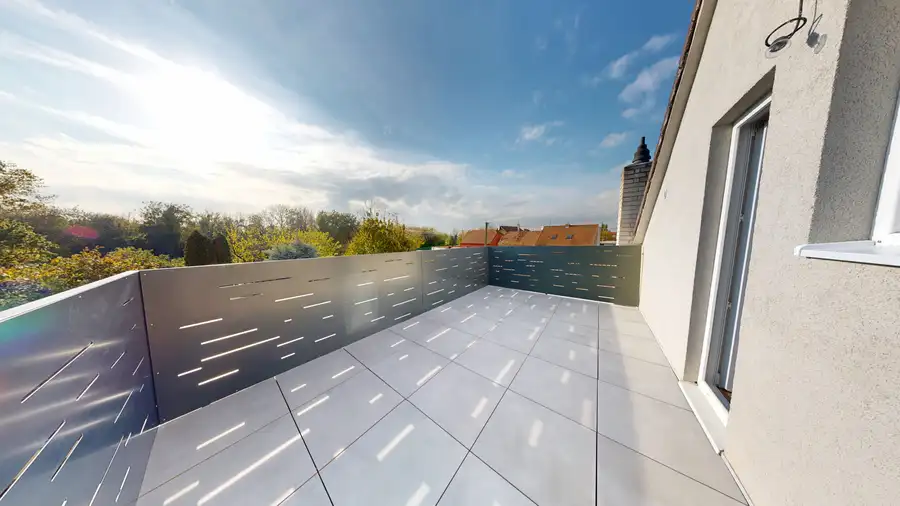

Aktuálna ponuka
4 nehnuteľnosti, predovšetkým rodinné domy. Každá má vlastnú stránku s fotkami, popisom a mapou.
Prezrieť ponukuDavid OtajovičRealitný maklér
Realitný maklér · Andel&Zachar s.r.o.
Predaj a prenájom nehnuteľností · Trnava, Voderady




Dom10 367 900 €AZ. 5 izbový dom a tichá ulica Trnava 128 m² Vážení zákazníci, hľadáte dom, ktorý má dušu, priestor pre celú rodinu, ideálny pozemok a výbornú adresu? Práve takúto nehnuteľnosť pridávame…Tomuto výberu zatiaľ nezodpovedá žiadna ponuka. Napíšte mi, čo hľadáte.
Volám sa David Otajovič. Som realitný maklér kancelárie Andel&Zachar s.r.o. a pôsobím predovšetkým v lokalitách Trnava a Voderady (Trnavský kraj).
4 nehnuteľnosti, predovšetkým rodinné domy. Každá má vlastnú stránku s fotkami, popisom a mapou.
Prezrieť ponukuTrnava, Voderady a okolie. Ponuku si môžete prezrieť podľa lokality.
Nehnuteľnosti v lokaliteOdhad trhovej ceny, príprava prezentácie, obhliadky, zmluvy a odovzdanie nehnuteľnosti.
Dohodnúť stretnutieSkutočné hodnotenia od ľudí, ktorým som pomohol predať alebo kúpiť nehnuteľnosť.
Sú spolupráce, na ktoré človek len tak nezabudne – a táto je presne jednou z nich. Rada by som z celého srdca poďakovala pánovi Davidovi Otajovičovi za jeho výnimočný prístup, ľudskosť a profesionalitu, ktoré cítiť v každom jednom kroku. Od prvého momentu bolo jasné, že som sa zverila do rúk človeka, ktorý svoju prácu nerobí len „dobre“, ale robí ju s nasadením, pokojom a skutočným záujmom o klienta. Vždy bol ochotný všetko trpezlivo vysvetliť, reagoval promptne a aj v situáciách, ktoré by pre iných mohli byť stresujúce, pôsobil veľmi isto a s nadhľadom. Skutočne, ak hľadáte makléra, ktorý je nielen profesionál, ale aj človek, na ktorého sa môžete kedykoľvek obrátiť a spoľahnúť, pána Otajoviča môžem s čistým svedomím odporučiť. Ďakujem ešte raz – za všetko :-)
Pán Otajovič bol počas celého procesu veľmi profesionálny, spoľahlivý a ochotný pomôcť. Komunikácia bola rýchla a bezproblémová, všetko prebehlo hladko a bez stresu. Určite ho odporúčam každému, kto hľadá kvalitné realitné služby.
Veľmi rada sa podelím o svoju skúsenosť s realitnou kanceláriou Andel&Zachar, najmä s maklérom Davidom Otajovičom. Od začiatku bol veľmi milý, ochotný a profesionálny. Všetko mi trpezlivo vysvetlil, vždy si našiel čas odpovedať na moje otázky a celý proces prebehol hladko. Som veľmi vďačná za jeho pomoc a ľudský prístup. Ďakujem a určite odporúčam ďalej.
S realitným maklérom Dávidom Otajovičom máme výbornú skúsenosť. Zabezpečil pre nás kompletný predaj nehnuteľnosti od začiatku až do konca, a to úplne bez starostí. Profesionálny prístup, ochota, komunikácia aj riešenie všetkých detailov boli na výbornej úrovni. P.Otajovič všetko vybavil promptne, spoľahlivo a s maximálnou zodpovednosťou, takže celý proces prebehol hladko a bez stresu. Ďakujeme za skvelú spoluprácu a určite ho odporúčame každému, kto hľadá spoľahlivého a profesionálneho makléra.
Chcem sa poďakovať celej realitnej kancelárii Andel&Zachar za skvelú spoluprácu a komplexné služby pri predaji rodinného domu. Obzvlášť maklérovi Davidovi Otajovičovi za jeho profesionálny a ústretový prístup. Všetko vďaka nemu prebehlo bez stresu a úplne v pohode - presne tak, ako si človek želá, keď rieši takú veľkú vec, ako je predaj nehnuteľnosti. Vždy bol ochotný, milý, všetko vysvetlil, pomohol a komunikoval. Realitnú kanceláriu aj makléra Davida úprimne odporúčam každému, kto hľadá seriózneho partnera pri predaji alebo kúpe nehnuteľnosti.
Spolupracoval som na kúpe nehnuteľnosti s pánom Otajovičom z A&Z a bol som veľmi spokojný. Pán maklér mi vždy vyšiel v ústrety - či už išlo o sprístupnenie nehnuteľnosti aj cez víkend, mimo jeho pracovného času. Vždy sme sa vedeli dohodnúť, zavolať si, prípadne sa stretnúť a doriešiť všetko potrebné. Na rozdiel od maklérov, s ktorými som sa počas hľadania stretol, pán Otajovič vedel o nehnuteľnosti povedať všetko, čo som potreboval vedieť, a takisto sprístupnil dokumentáciu, pokiaľ išlo o detaily. Boli sme veľmi spokojní s prístupom makléra aj realitnej kancelárie ako takej. Takisto sme využili služby ich spoluoracovníkov v oblasti financovania a všetko sme vyriešili načas.
Každý špendlík je jedna nehnuteľnosť z mojej ponuky. Kliknite a pozrite sa.
Na čo sa pýtate najčastejšie, skôr než sa stretneme.
Odhad trhovej ceny vychádza z aktuálnych ponúk a predajov v lokalite, nie z cenníkových tabuliek. Podmienky Vám poviem pri prvom telefonáte.
Najprv obhliadka a odhad ceny, potom príprava prezentácie (fotografie, popis, inzercia), obhliadky so záujemcami, rezervačná zmluva, kúpna zmluva, návrh na vklad do katastra a odovzdanie nehnuteľnosti. O každom kroku viete vopred.
Najrýchlejšie cez WhatsApp alebo telefón. Termín stretnutia alebo obhliadky dohodneme podľa Vás.